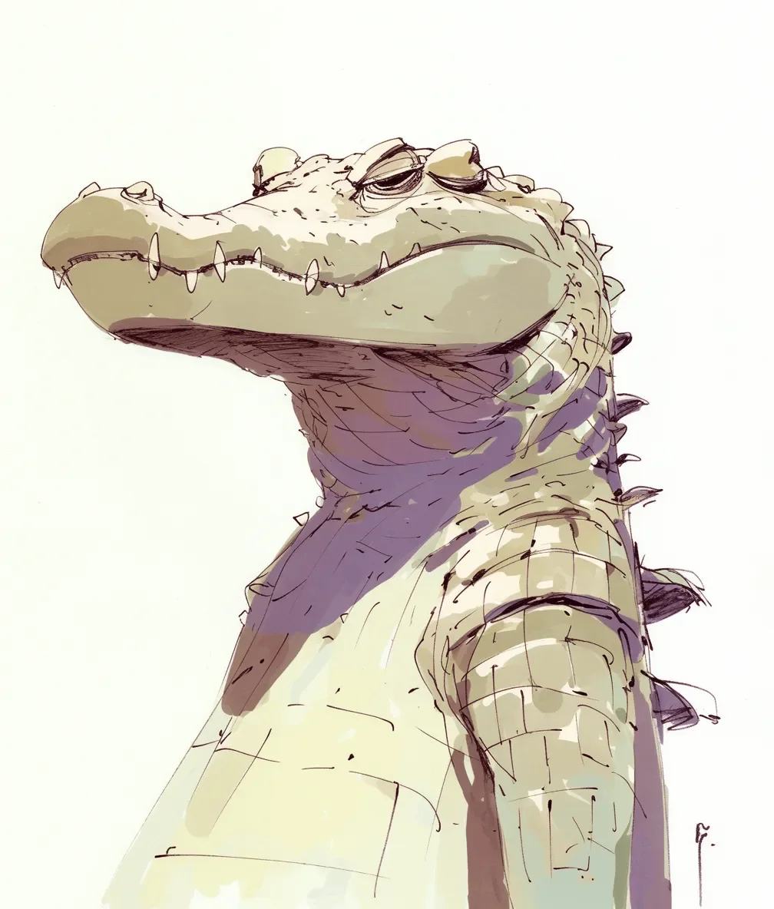

배고픔이 그의 배 속에서 타오르는 석탄처럼 자리 잡고 있었고, 아주 작은 물고기조차도 잔치처럼 보이게 만들었다. 육백 파운드의 최상위 포식자가 피라미나 상상하게 된 것은 자연이 만든 잔인한 농담이었다.
[The hunger sat in his belly like a burning coal, making even the smallest fish look like a feast. Six hundred pounds of apex predator reduced to fantasizing about minnows—a cruel joke of nature.]
그는 수면을 지켜보았다. 고대 호박석처럼 빛나는 눈으로 일렁이는 물결 하나하나가 그의 빈 배가 무시할 수 없는 약속처럼 보였다.
[He watched the water’s surface, eyes gleaming like ancient amber stones, each ripple a promise his empty stomach couldn’t ignore.]
물은 움직임의 비밀을 속삭였다—여기서 첨벙, 저기서 물결. 그의 콧구멍은 부상당한 사슴의 피 냄새를 맡고 움찔거렸다. 짐승의 근육질 꼬리는 액체처럼 우아하게 움직이며, 탁한 물을 거의 흐트러뜨리지 않고 앞으로 미끄러져 나갔다.
[The water whispered secrets of movement—a splash here, a ripple there. His nostrils twitched at the metallic scent of blood from a wounded deer. The beast’s muscled tail moved with liquid grace, barely disturbing the murky water as he glided forward.]
그의 갑옷 같은 몸을 따라 늘어선 비늘 하나하나가 기대감으로 따끔거렸고, 먹잇감의 언어에 맞춰진 살아있는 감각망이었다.
[Each scale along his armored body tingled with anticipation, a living network of sensors attuned to the language of prey.]
그림자 하나가 수면을 가로질렀다—물고기보다는 크고 배보다는 작았다. 크기가 딱 맞았다. 피를 흘려 어지러워진 사슴이 물가에 너무 가까이 다가왔고, 물을 마시기 위해 고개를 숙이자 그 발굽이 진흙 속에서 부드러운 빨아들이는 소리를 냈다.
[A shadow broke the water’s surface—larger than a fish, smaller than a boat. The size was right. The deer, dizzy from blood loss, had wandered too close to the water’s edge, its hooves making soft sucking sounds in the mud as it lowered its head to drink.]
고대 포식자의 동공이 확장되며 타고난 살인자의 정확성으로 거리를 측정했다. 가라앉은 통나무처럼 움직임 없는 그의 몸은 잠재적 에너지로 꿈틀거렸다.
[The ancient predator’s pupils dilated, measuring distance with the precision of a born killer. His body, still as a sunken log, coiled with potential energy.]
공격은 아무런 경고도 없이 시작되었다. 4억 년의 진화적 완성체가 물속에서 튀어올랐고, 부서진 다이아몬드처럼 햇빛을 받아 반짝이는 물방울들이 흩뿌려졌다. 자연의 가장 오래된 설계로 만들어진 턱이 쓰러지는 나무의 힘으로 덥석 물었다.
[The attack came without warning. Four hundred million years of evolutionary perfection erupted from the water in a spray of droplets that caught the sunlight like shattered diamonds. Jaws crafted by nature’s oldest design clamped down with the force of a falling tree.]
아무런 몸부림도, 추격도, 극적인 싸움도 없었다—단지 배고픔을 채우는 효율적인 잔혹함만이 있었다. 그가 자신의 전리품을 더 깊은 물속으로 끌고 들어가면서, 그의 배 속의 타오르는 석탄은 식기 시작했고, 생존의 무거운 만족감으로 대체되었다. 다음 사냥 때까지, 그는 쉴 것이다. 타이탄의 시대부터 변함없이 이어져 온 생존의 완벽한 설계의 살아있는 증거로서.
[There was no struggle, no chase, no dramatic battle—just the efficient brutality of hunger satisfied. As he dragged his prize into deeper water, the burning coal in his belly began to cool, replaced by the heavy satisfaction of survival. Until the next hunt, he would rest, a living testament to survival’s perfect design, unchanged since the time of titans.]